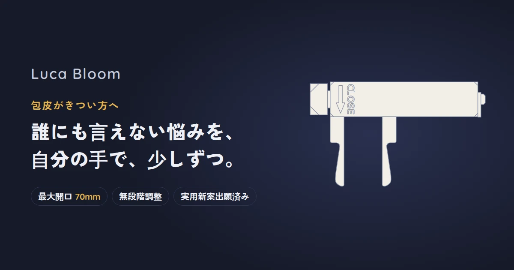

REASON 01
ずれにくい
「逆テーパー」アーム
アームは根元が細く、先端に向かって太くなる形（逆テーパー）。くぼみ部の幅は全閉時で5mm。先端が太いので、使用中にずれにくくなります。肌に面で当たるので、一点に負担がかかりません。
ハンドルを回すだけ。ずれにくく、手を離しても戻らない。最大70mmまで、あなたのペースで広げられます。

ピンクの膜は狭い穴のイメージ。閉じたアームを入れ、ハンドルで内側からゆっくり広げます。
※当社調べ（2026年9月時点、国内販売品2製品と比較）
初期ロット100個限定価格 5,800円（税込）
Amazonで購入するYour worries
その悩みのために生まれたのが
Luca Bloom です。
開発者とモニターの声を何度も重ねて完成しました。
4 reasons
REASON 01
アームは根元が細く、先端に向かって太くなる形（逆テーパー）。くぼみ部の幅は全閉時で5mm。先端が太いので、使用中にずれにくくなります。肌に面で当たるので、一点に負担がかかりません。
REASON 02
アームの断面は幅6mm。肌に当たる外側を平らにし、角をR2（半径2mm）で丸めています。丸棒のように1本の線で当たるのではなく面で当たるため、同じ力でも1か所にかかる圧力が小さくなり、局所的な負担を抑えます。
図：アームの最も太い部分の断面（実寸比）
REASON 03
ハンドルを回すと、アームがなめらかに開きます。段階ではなく無段階なので、「ちょうどいい幅」でぴたりと止められます。ネジの力でその位置に固定される構造（セルフロック）なので、手を離しても急に閉じません。
REASON 04
70mm
1台で最大70mmまで、ご自身に合った幅を選べます。2本のアームは最後まで平行のまま開き、根元から先端まで均等に広げます。
※当社調べ（2026年9月時点、国内販売品2製品と比較）
Voice
モニター2名の使用感です。効果を示すものではありません。
4/5
使い方になれるまで大変だったけど、数日使ううちに勝手がわかるようになって、とても使いやすかったと思います。ただ、後ろの緊急解除のプレートはなくしやすそうだと思いました。
5/5
いろいろな器具を探していたところ、新商品の開発に携われるということで提供してくれました。ネットには沢山情報があり、使いにくかった、諦めてしまったとかありましたが、全然そんなことなく、使うのがめちゃくちゃ楽しかったです！思ったより長い期間使いましたが、最高です笑
About
包皮の口が狭く、手でむいても亀頭を出せない状態。
ふだんは包皮をかぶっているが、手でむけば亀頭を出せる状態。むくと口が締めつけられる方も。
むくことはできても、包皮の口が狭く、根元側で締めつけられる状態。
Luca Bloomは、包皮が狭い方や匂いが気になる方のためのセルフケアツールです。
痛み・腫れ・出血がある場合や、むいた包皮が戻らない場合は、すぐに医療機関を受診してください。
仮性包茎リング（包茎リング）は、むいた包皮を根元側に留めておくための輪です。リングをつけられない方のためのLuca Bloomです。
| 包茎リング | Luca Bloom | |
|---|---|---|
| 目的 | むいた状態を保つ | 狭い口を広げる |
| 向いている方 | 手でむける方 | 包皮がきつい方 |
| サイズ | 輪の大きさを選ぶ | 1台で最大70mmまで無段階 |
「リングを使いたいけれど、そもそもむけない」という方の、最初の一歩に。
Privacy
製品名から梱包の箱まで、恥ずかしさを感じさせないことを徹底しました。
化粧箱の表記は、背面の「Luca Bloom」の文字だけ。
横にドラッグすると向きを変えられます。
How to use
STEP 1
クリームやオイルでなじませるアームと包皮をしっかり保湿・潤滑すると、入れやすくなります。STEP 2
閉じたアームを入れるアームを閉じた状態で、先端から包皮の狭い部分へ。STEP 3
痛くない幅まで、回して開くハンドルをゆっくり回し、痛みを感じない幅で止めます。そのまま固定されます。連続使用の上限（安全のため）
上限を超える使用や、就寝中の使用はしないでください。異変を感じたらすぐに使用を中止してください。
図解のご使用マニュアルを見る
Quality
製造国：中国
検品・洗浄・組立：日本部品は中国で製造し、出荷前に日本で組み立て・超音波洗浄・検品を行っています。
軽くて冷たくない樹脂製POM樹脂（歯車などにも使われる、なめらかで丈夫なプラスチック）を採用。金属のような重さや冷たさがありません。
実用新案出願済みの独自構造従来にない構造として、実用新案（形や構造の工夫を守る国の制度）を出願済みです。
FAQ
Luca Bloomは、包皮が狭い方や匂いが気になる方のためのセルフケアツール（雑貨）です。特定の症状の改善や治療を目的としたものではありません。痛み・腫れ・傷などがある場合や、治療中の方はご使用にならず、医師にご相談ください。
包茎リングは、むいた包皮を根元側に留めておくための輪です。Luca Bloomは、ハンドルを回してアームの間隔を最大70mmまで無段階に調整する、リングをつけられない方のためのセルフケアツールです。
箱にはブランド名「Luca Bloom」だけが入っており、製品名から梱包まで、ひと目で用途がわからないようにしています。
無段階で少しずつ開けるので、痛みを感じない幅で止められます。クリームやオイルで保湿・潤滑してからお使いください。痛みや異変があれば、すぐに使用を中止してください。
安全のため、連続使用の上限を設けています。1回30分以内、24時間の合計1時間以内でお使いください。就寝中の使用はできません。
個体差により、アームの先端がわずかに開いている場合があります。製品の仕様ですので、ご了承ください。
本製品は雑貨であり、医療機器ではありません。治療に関する効果をうたうものではありません。
Support
同梱カードのQRコードからも開けます。ご使用前に必ずお読みください。